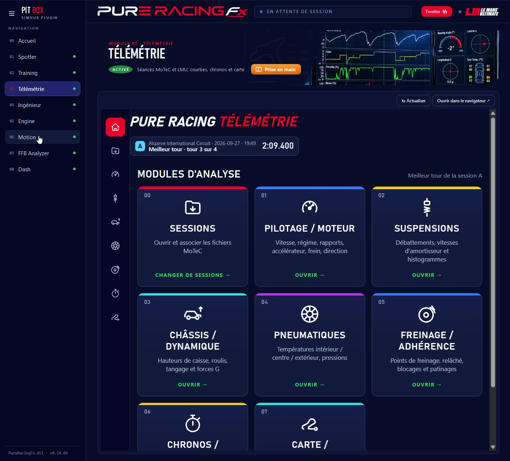
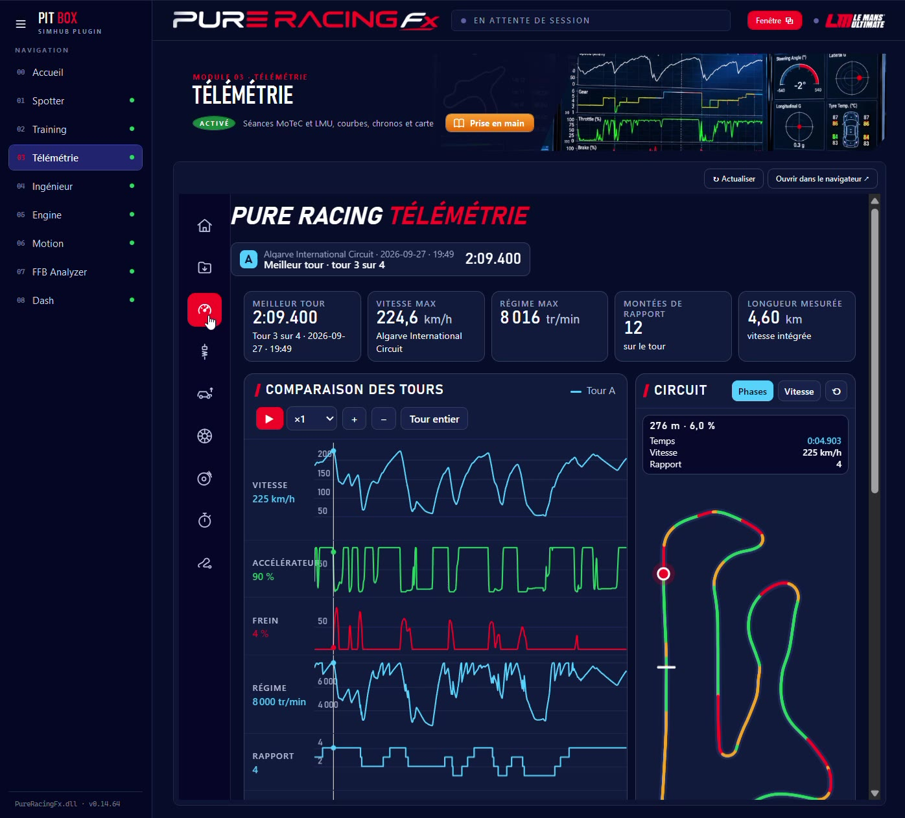
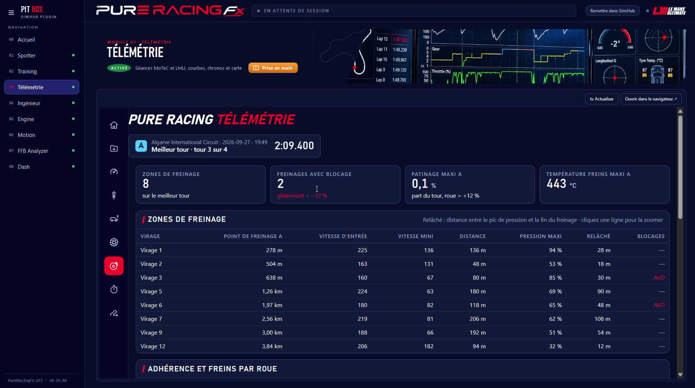
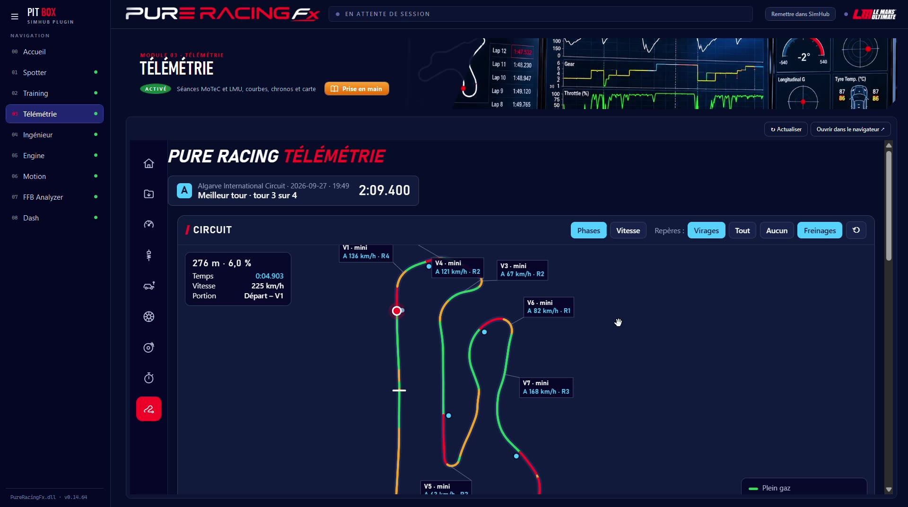

Télémétrie lit tes enregistrements MoTeC, trouve le meilleur tour de chaque séance et compare deux tours point par point. Sept pages d'analyse, une carte du circuit, et tout ce qu'il faut pour savoir où et pourquoi tu perds du temps.
Choisis une séance A, et une séance B pour comparer : ton meilleur tour d'aujourd'hui contre celui d'hier, ou contre celui d'un équipier.

Les courbes des deux tours se superposent sur la distance, avec la carte à côté : un clic sur une courbe montre l'endroit sur le circuit.


La carte montre ta trajectoire en couleur (freinage, entre-deux, plein gaz), les vitesses mini de chaque virage et les repères que tu as posés à la voix avec le Spotter.

| Point | Ce qu'il faut savoir |
|---|---|
| Fichiers | Les enregistrements MoTeC (.ld, avec leur .ldx) de ton jeu. Active l'export de télémétrie dans le jeu, puis ajoute son dossier dans Sessions. |
| Jeux | Le Mans Ultimate en priorité ; les autres jeux qui exportent au format MoTeC. |
| Place sur le disque | Une croix à côté de chaque séance supprime les vieux enregistrements, qui pèsent lourd. |
| Tablette | Toutes les pages s'ouvrent aussi sur une tablette ou un téléphone du même Wi-Fi. |
De la télémétrie au setup : un diagnostic et des réglages à essayer.